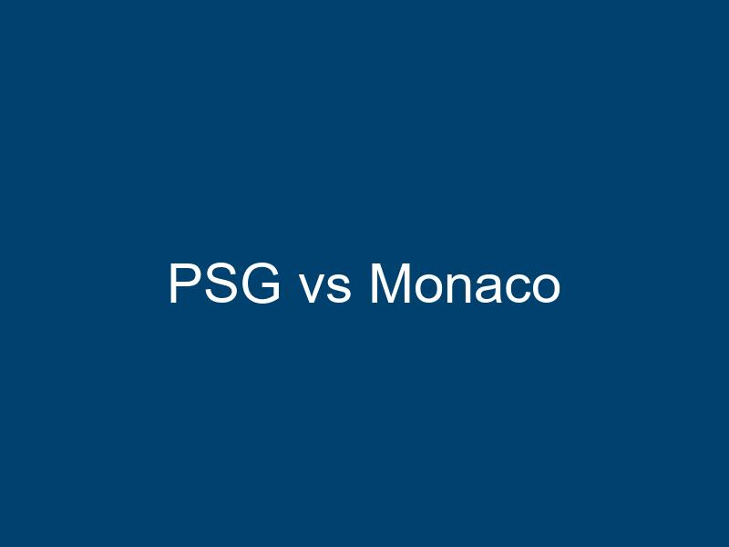

Das Spitzenspiel der Ligue 1 steht bevor: Paris Saint-Germain empfängt AS Monaco im Parc des Princes. Beide Teams trennen nur zwei Punkte in der Tabelle. Ein Sieg der Monegassen würde das Titelrennen wieder komplett offen gestalten, während PSG mit einem Heimerfolg einen großen Schritt Richtung Meisterschaft machen würde.
PSG mit Superstar-Ensemble
Kylian Mbappé ist mit 26 Saisontoren wieder der überragende Spieler bei PSG. Der französische Weltmeister zeigt Woche für Woche Weltklasse-Leistungen. Zusammen mit Gonçalo Ramos und Ousmane Dembélé bildet er ein furchteinflößendes Angriffstrio.
Monacos Überraschungssaison
AS Monaco hat in dieser Saison alle überrascht. Trainer Adi Hütter hat das Team perfekt eingestellt und mit jungen Talenten wie Eliesse Ben Seghir und Maghnes Akliouche für Furore gesorgt. Die Mannschaft spielt mutigen, offensiven Fußball und schreckt auch vor den großen Namen nicht zurück.
Das taktische Duell
Luis Enrique setzt bei PSG auf ein variables 4-3-3 System mit hohem Pressing. Monaco hingegen agiert eher kontrolliert und wartet auf Konterchancen. Das Mittelfeld-Duell zwischen Vitinha und Denis Zakaria wird entscheidend sein für den Spielverlauf.
Die Bedeutung für das Titelrennen
Bei noch sieben ausstehenden Spielen könnte dieses Match vorentscheidend sein. PSG steht unter Druck, den Titel zu verteidigen, während Monaco vom ersten Meistertitel seit 2017 träumt. Die Atmosphäre im Parc des Princes wird elektrisch sein.
Historische Duelle
Die Begegnungen zwischen PSG und Monaco waren in der Vergangenheit immer spektakulär. Beide Teams stehen für offensiven, attraktiven Fußball. In den letzten fünf Duellen gab es im Schnitt 3,8 Tore pro Spiel - Torgarantie also auch diesmal?
Prognose: Ein enges Spiel mit Chancen auf beiden Seiten ist zu erwarten. PSG hat den Heimvorteil, aber Monaco zeigt sich auswärts sehr stark. Meine Prognose: 2:2 Unentschieden, womit PSG leicht im Vorteil bliebe.